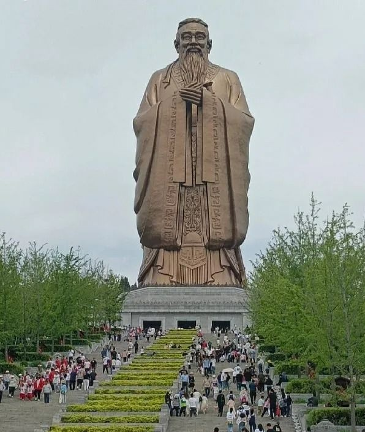

Who Was Confucius?

Confucius (traditionally dated 551–479 BCE) was an ancient Chinese philosopher, teacher, and political thinker whose ideas became enormously influential in Chinese and East Asian intellectual history. He lived during the later Zhou period, an era of political division and social change in which different states competed for power.
Confucius is especially associated with questions about how people should cultivate their character, behave toward one another, educate themselves, organize families and communities, and govern a society. His philosophy places considerable emphasis on moral development, learning, relationships, ritual practice, and responsible conduct.
The teachings associated with Confucius were preserved primarily through later texts and traditions, especially the Analects. Because the historical evidence is complex, it is important to distinguish between the historical Confucius and the many interpretations of Confucius that developed over subsequent centuries.
Confucius: Life, Philosophy, and Quick Facts
- Name — Confucius, traditionally known in Chinese as Kongzi or Kong Fuzi
- Traditional dates — 551–479 BCE
- From — The state of Lu in ancient China
- Tradition — Ru thought, later associated with Confucianism
- Known for — Ethics, education, ritual, moral cultivation, social relationships, and political philosophy
- Major text associated with his teachings — The Analects
- Important concepts — Ren, li, yi, filial piety, learning, virtue, and moral cultivation
- Historical importance — One of the most influential thinkers in Chinese and East Asian intellectual history
Confucius and Ancient China: Historical Context
Confucius lived during the Spring and Autumn period, when the authority of the Zhou royal house had weakened and different regional states exercised increasing independence. Political competition and social instability created an environment in which questions about good government, social order, education, and moral leadership became particularly important.
Confucius looked to earlier Zhou traditions as an important source of moral and social guidance. Rather than presenting himself simply as the inventor of an entirely new philosophy, the tradition portrays him as a teacher who studied and transmitted important cultural and ethical practices associated with the past.
His philosophy therefore cannot be separated completely from the historical world in which he lived. Questions of family obligation, political authority, ritual, education, and social responsibility were connected to the wider problem of how a fragmented society could recover moral and political order.
What Did Confucius Teach?

Confucius' teachings focused heavily on how people should develop themselves and behave toward others. Rather than reducing his philosophy to a single rule, his thought involves a network of ideas concerning virtue, education, ritual, relationships, responsibility, and government.
A central feature of Confucian thought is the idea that a good society depends upon the moral development of the people within it. Confucius therefore emphasized learning, self-discipline, reflection, proper conduct, and the cultivation of virtues.
His philosophy also connects personal morality with political life. A ruler who behaves well can provide a moral example to others, while a ruler who relies only on coercion may fail to cultivate genuine virtue among the people.
What Is Ren in Confucius' Philosophy?
Ren is one of the most important concepts associated with Confucius. It is often translated using terms such as benevolence, humaneness, or human-heartedness.
The concept does not simply describe being pleasant or kind in a superficial sense. In the Analects, ren is connected with how a person learns to care for and properly respond to other people. Its meaning can vary according to context, which is one reason why translating Confucian concepts into a single English word can be difficult.
Ren is therefore closely connected with moral cultivation. A person develops the ability to act appropriately toward others by learning, reflecting, practicing proper conduct, and developing a stable moral character.
What Is Li in Confucius' Philosophy?
Li is commonly translated as ritual propriety, ritual, or appropriate conduct. The concept refers to patterns of behavior that structure social, ceremonial, and interpersonal life.
For Confucius, ritual was not merely a collection of empty ceremonies. Proper ritual practice could help shape emotions, habits, relationships, and moral character. Learning how to behave appropriately in different situations was part of becoming a morally cultivated person.
Li therefore works together with other Confucian virtues. Proper conduct without genuine moral concern can become mechanical, while moral intentions without appropriate conduct may fail to produce good relationships and social order.
Confucius and Filial Piety: Respect for Parents and Family
Filial piety, commonly translated from the Chinese concept xiao, is an important part of Confucian social philosophy. It concerns the responsibilities and attitudes people should have toward their parents and elders.
Confucius connected family relationships with wider patterns of social responsibility. Learning to behave respectfully and responsibly within the family was understood as part of developing the character needed to participate properly in society.
Filial piety should therefore not be understood simply as obedience. In the broader Confucian framework, family relationships involve reciprocal responsibilities, moral conduct, respect, and the cultivation of appropriate character.
Confucius on Education and Learning

Education is one of the most important themes in Confucius' philosophy. He regarded learning as an essential part of moral development rather than merely a method of acquiring information.
Confucian education involved studying the traditions of the past, learning from teachers, reflecting upon what had been learned, and putting knowledge into practice. The goal was not simply to become knowledgeable but to become a better person.
Confucius is also traditionally remembered for teaching students from different social backgrounds. His emphasis on learning contributed to his later reputation as an exemplary teacher and helped make education a central feature of the Confucian tradition.
Why Is Education Important to Confucius?
Education allows people to develop judgment, discipline, knowledge, and moral character. For Confucius, learning and reflection should work together. Knowledge without thoughtful reflection can remain superficial, while reflection without learning can lead to confusion.
What Are the Main Virtues in Confucius' Philosophy?
Confucius discussed several virtues that contribute to the development of a morally cultivated person. Different later traditions organized these virtues in different ways, so it is important not to assume that every later list represents a formal system created by Confucius himself.
Ren — Benevolence and Humaneness
Ren concerns appropriate concern for other people and is one of the central ethical ideas associated with Confucius.
Yi — Righteousness
Yi concerns acting appropriately and doing what is morally right rather than simply pursuing personal advantage.
Li — Ritual Propriety
Li refers to appropriate ritual and social conduct and helps shape habits, relationships, and moral character.
Zhi — Wisdom
Zhi is associated with practical moral understanding, including the ability to recognize people and situations accurately.
Xin — Trustworthiness
Xin concerns reliability, trustworthiness, and the importance of being worthy of confidence in one's relationships with others.
What Is the Junzi in Confucian Philosophy?
The term junzi is often translated as gentleman, exemplary person, or noble person. In Confucian philosophy, the term describes an ideal of moral cultivation rather than simply referring to someone born into a particular social class.
The junzi develops character through learning, self-discipline, appropriate conduct, and concern for others. This ideal contrasts with the person who is primarily motivated by selfish advantage or immediate personal gain.
The idea is important because Confucius connects the quality of society with the character of the people who participate in it. Personal moral development therefore has social and political consequences.
Confucius' Ethics: How Should a Person Live?
Confucian ethics focuses on the cultivation of character and the responsibilities that arise from human relationships. Rather than presenting morality only as a list of universal rules, Confucian teachings frequently examine how a morally cultivated person should respond to particular situations.
Confucius is also associated with a principle concerning reciprocity: people should consider how they themselves would respond to treatment before imposing similar treatment on others. This idea is related to the broader Confucian emphasis on empathy, self-restraint, and proper relationships.
Confucian ethics is therefore closely connected with virtue ethics. The focus is not merely on whether a single action follows a rule but also on what kind of person someone is becoming through repeated actions, education, relationships, and habits.
Confucius' Political Philosophy: What Makes a Good Ruler?
Confucius believed that political order depends significantly upon the moral character of rulers and officials. Government should not rely solely on punishment and coercion. A ruler should instead provide a moral example that encourages people to develop proper conduct.
This does not mean that Confucius rejected political institutions or laws. Rather, his political philosophy places strong emphasis on the character of those who exercise authority and on the moral culture of society.
A ruler who behaves with integrity can influence society through example. In this sense, political leadership is also a form of moral leadership.
Why Did Confucius Emphasize Moral Leadership?
Confucius regarded social order as something that cannot be maintained indefinitely through fear alone. People who are educated and morally cultivated are more capable of fulfilling their responsibilities and maintaining stable relationships.
Confucius on Family, Society, and Government
Confucian philosophy connects the family with wider social and political relationships. The habits people develop within families can influence how they behave toward teachers, neighbors, officials, rulers, and other members of society.
This does not mean that Confucius treated the family and government as identical institutions. Instead, he used patterns of responsibility within relationships to think about how a stable society should function.
The resulting philosophy emphasizes reciprocal responsibilities, appropriate conduct, moral example, and the importance of fulfilling one's role responsibly.
What Is the Rectification of Names in Confucius?
The idea commonly called the rectification of names is associated with Confucius' concern for the relationship between social roles, language, and conduct.
The basic idea is that people occupying particular social roles should actually behave according to the responsibilities associated with those roles. A ruler should act as a ruler should, a parent as a parent should, and so forth.
This idea reflects a wider Confucian concern with restoring order through appropriate conduct. Social titles alone do not create good government or good relationships; the people who occupy those roles must act properly.
The Analects of Confucius: His Most Important Teachings
The Analects, known in Chinese as the Lunyu, is the text most closely associated with the teachings of Confucius. It consists largely of sayings, conversations, and anecdotes involving Confucius and his disciples.
The Analects is not a systematic philosophical treatise in the style of a modern textbook. Its discussions move between ethics, education, ritual, political leadership, relationships, learning, and personal conduct.
The history of the Analects is complex. Scholars continue to debate how its different materials developed and were transmitted. It should therefore not be treated as a simple verbatim record of everything Confucius personally said.
Did Confucius Write the Analects?
The Analects is traditionally associated with Confucius, but it was not written by Confucius as a single systematic philosophical book. The text preserves sayings and conversations associated with him and was transmitted and compiled by later generations.
This distinction is important when studying Confucius historically. The Analects is a major source for reconstructing his teachings, but the relationship between the historical Confucius and the final transmitted text is complicated.
Later interpreters also developed different understandings of Confucius' teachings. As a result, there is not one completely uncontested interpretation of what Confucius originally believed.
What Is Confucianism?
Confucianism is the name commonly used for a broad intellectual, ethical, educational, social, and political tradition that developed from teachings associated with Confucius and later thinkers.
Confucius himself did not necessarily think of himself as founding a philosophical system called "Confucianism." The tradition developed over centuries as later thinkers interpreted, expanded, criticized, and transformed ideas associated with him.
Important later Confucian thinkers include Mencius, Xunzi, and, much later, Zhu Xi and Wang Yangming. Their philosophies are related to Confucius but should not simply be treated as identical to his own teachings.
What Did Confucius Believe About Human Nature?
Confucius did not develop a single systematic theory of human nature comparable to some later philosophical systems. His teachings are more concerned with how people can cultivate themselves through learning, practice, relationships, and moral development.
His emphasis on education suggests that human beings can develop their character through sustained effort. People are not simply defined by their initial condition; moral cultivation can transform how they think, feel, and behave.
Later Confucian philosophers developed much more explicit theories of human nature. Mencius, for example, became famous for arguing that human nature has morally good tendencies, while Xunzi developed a very different account.
Confucius and the Concept of Heaven
Tian, often translated as Heaven, is an important concept in early Chinese thought and appears in discussions associated with Confucius.
The meaning of Heaven in early Chinese philosophy is complex. It can refer to a cosmic or normative order and is connected with older Zhou ideas concerning political legitimacy and moral authority.
Confucius' philosophy should therefore not be reduced either to a simple belief in a personal deity or to a completely secular theory. The meaning and role of Heaven varies across the early sources and later interpretations.
Confucius' Philosophy of Education and Self-Cultivation
Confucius regarded learning as a lifelong process. Education was not merely preparation for employment or political office; it was a means of transforming the character of the learner.
Study, imitation of worthy examples, reflection, and practice all contribute to moral development. A person becomes better not simply by memorizing information but by incorporating what has been learned into conduct.
This makes education central to Confucian philosophy. Knowledge, morality, social responsibility, and personal development are closely interconnected rather than being separate areas of life.
Confucius' Main Philosophical Ideas
Confucius' philosophy is best understood through several interconnected themes rather than through one isolated doctrine.
1. Moral Cultivation
People should continuously develop their character through learning, reflection, discipline, and proper conduct.
2. Ren and Humaneness
Moral life requires genuine concern for other people and the ability to respond appropriately to their needs and circumstances.
3. Ritual Propriety
Proper conduct and ritual practice help shape relationships, emotions, habits, and moral character.
4. Education
Learning is essential to personal development and the formation of responsible members of society.
5. Filial Piety
Family relationships provide an important context for developing responsibility, respect, and moral character.
6. Moral Government
Political leaders should govern through moral example as well as institutions and laws.
7. Responsible Relationships
People should understand their responsibilities within the social relationships in which they participate.
Why Is Confucius Important in Chinese Philosophy?
Confucius became one of the most influential figures in the history of Chinese thought. His teachings shaped discussions of education, morality, government, family relationships, ritual, and personal development for centuries.
His influence extended far beyond China. Confucian traditions became important in Korea, Japan, Vietnam, and other parts of East Asia, although each society interpreted and developed Confucian thought in distinctive ways.
Confucius' historical influence is therefore not limited to one philosophical doctrine. His ideas became part of wider educational, political, social, and cultural traditions.
Mencius, Xunzi, and the Development of Confucian Philosophy
Later thinkers developed significantly different interpretations of the philosophical tradition associated with Confucius.
Mencius
Mencius became one of the most important early interpreters of Confucian thought. He is especially famous for arguing that human beings possess morally good tendencies that can be cultivated.
Xunzi
Xunzi offered a contrasting account of human nature. He argued that people require education, ritual, and deliberate cultivation to develop proper moral behavior.
Their disagreement demonstrates that the Confucian tradition was not philosophically uniform. Later thinkers debated fundamental questions about human nature, morality, education, and social order.
Confucius and Neo-Confucian Philosophy
Centuries after Confucius, Chinese philosophers developed what is commonly called Neo-Confucianism. Thinkers such as Zhu Xi and Wang Yangming developed sophisticated philosophical systems that engaged with Buddhism, Daoism, and earlier Confucian thought.
Zhu Xi gave the Analects a particularly important place within the curriculum of the Four Books, helping establish a framework that became highly influential in later Chinese education.
These later developments should not be confused with the original teachings of Confucius. They represent later interpretations and philosophical developments within the broader Confucian tradition.
What Do We Actually Know About Confucius?
Confucius is one of the best-known figures in ancient Chinese philosophy, but reconstructing his historical life and exact teachings is difficult. Much of the surviving material was transmitted or compiled after his lifetime.
Relatively Well Established
- Confucius is traditionally dated to 551–479 BCE.
- He was associated with the state of Lu.
- He became famous as a teacher and thinker.
- His teachings became foundational to later Confucian traditions.
- The Analects became the most important text associated with his teachings.
Historically Complex
- The precise details of his biography are difficult to establish.
- The exact development and compilation of the Analects remain subjects of scholarly discussion.
- Later traditions attributed many sayings and stories to Confucius.
- The precise boundaries of his original philosophical teachings cannot always be established with certainty.
Famous Teachings Associated with Confucius
"He who learns but does not think is lost; he who thinks but does not learn is in great danger."
Frequently Asked Questions About Confucius
Who was Confucius?
Confucius was an ancient Chinese philosopher and teacher traditionally dated to 551–479 BCE. He became one of the most influential thinkers in Chinese and East Asian intellectual history.
What is Confucius famous for?
Confucius is famous for his teachings about ethics, education, ritual, family relationships, moral cultivation, social responsibility, and good government.
What did Confucius teach?
Confucius taught the importance of moral character, learning, appropriate conduct, responsibility within relationships, education, and ethical leadership.
What is Confucius' philosophy?
Confucius' philosophy centers on moral self-cultivation, education, virtue, proper relationships, ritual, family responsibility, and ethical government.
What is Confucianism?
Confucianism is the broad philosophical, ethical, educational, social, and political tradition that developed from teachings associated with Confucius and later thinkers.
What is the Analects?
The Analects is a collection of sayings, conversations, and anecdotes associated with Confucius and his disciples. It is the most important text traditionally associated with his teachings.
What is ren in Confucianism?
Ren is one of the central concepts in Confucian thought and is commonly translated as benevolence, humaneness, or human-heartedness. It concerns morally appropriate concern for other people.
What is li according to Confucius?
Li refers to ritual propriety, appropriate conduct, and established forms of social and ceremonial behavior. Confucius connected proper conduct with moral development and social harmony.
What did Confucius say about education?
Confucius regarded learning as essential to personal and moral development. Education involved studying, reflecting, learning from worthy examples, and putting knowledge into practice.
What did Confucius believe about government?
Confucius emphasized moral leadership and argued that rulers should provide good examples to the people. Political order depends not only on punishment and coercion but also on virtue and proper conduct.
Did Confucius believe in filial piety?
Yes. Filial piety, or respect and responsibility toward parents and elders, is an important theme in Confucian thought and is connected to broader ideas about social responsibility.
Was Confucius a religious figure?
Confucius is primarily studied as a philosopher, teacher, and ethical and political thinker. His teachings also engage with traditional Chinese ideas concerning ritual, ancestors, Heaven, and moral order. The later Confucian tradition developed both philosophical and religious dimensions.
Who were the major followers of Confucius?
Mencius and Xunzi became two of the most important later thinkers in the Confucian tradition. Their interpretations differed significantly, especially concerning human nature and moral cultivation.
Why is Confucius important today?
Confucius remains important because his philosophy raises enduring questions about education, character, family relationships, ethical leadership, social responsibility, and how people should live together.
Related Chinese Philosophers and Thinkers
Confucius belongs to a rich tradition of Chinese philosophy that includes competing approaches to ethics, human nature, politics, knowledge, and the nature of reality.
Philosophy Branches Connected to Confucius
Confucius' philosophy connects strongly with ethics, political philosophy, social philosophy, philosophy of education, and questions about human nature. His emphasis on moral character and responsible conduct makes his thought especially relevant to the study of ethics.
Why Confucius Still Matters
Confucius remains one of the most influential philosophers in world history because his questions are not limited to the political world of ancient China. His philosophy asks how people become good, educated, responsible, and capable of living well with others.
His emphasis on learning, moral cultivation, family responsibility, ritual, virtue, and ethical leadership created a philosophical tradition that continued to develop long after his death. Later thinkers repeatedly reinterpreted his teachings in response to new philosophical and social problems.
Whether one agrees with Confucius or not, his philosophy provides an enduring framework for thinking about a fundamental question: How can individuals cultivate themselves so that their relationships, communities, and societies become better?
Explore Great Philosophers